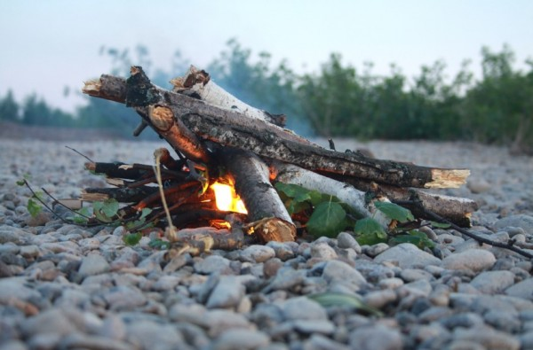
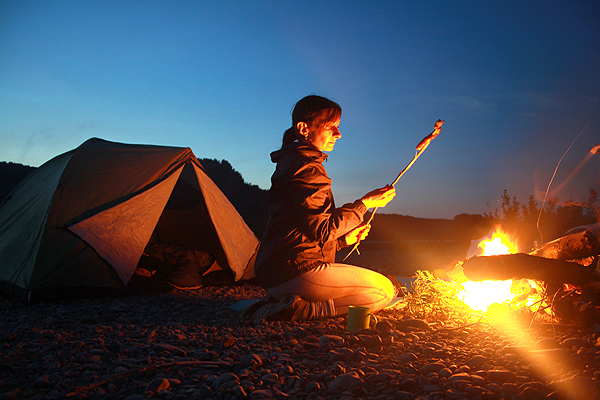
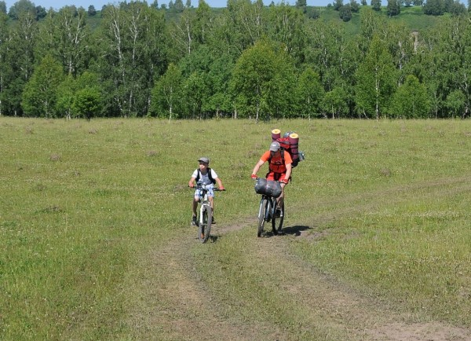
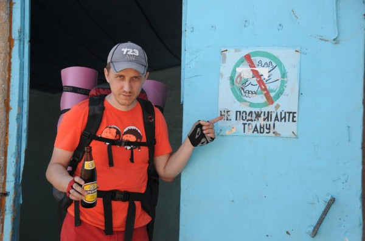
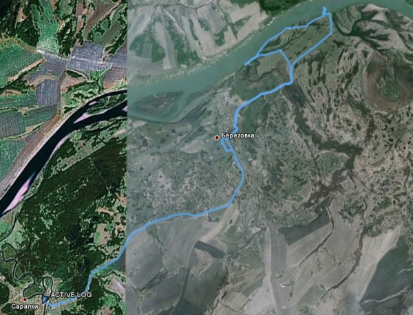

Понятно, что какие-то 24 часа без машины глупо растягивать на целых три поста, но иначе не вышло, поэтому сегодня, по прошествии уже двух недель — окончание.
Итак, за дровами пришлось вернуться на берег. Пересекли вновь вброд Томь, и отъехав на велосипедах метров 100 от реки, поднялись в горку. В лесу немного пораздавался топор дровосека и, держа в одной руке руль, а в другой фрагмент дерева мы вернулись на остров.
Онлайн трансляция
Результатом похода за дровами стал вот такой уютный костёр

Потом была ночь (это, кстати были одни из самых коротких ночей в году). Мы сидели, разговаривали о жизни, политике, футболе. Я даже попробовал сделать фотку на длинной выдержке.

Легли спать в общем около 4 утра. Уже было светло. С залетевшими в палатку комарами удалось договориться на 4 часа сна. Около 8 часов утра комары начали усиленно жужжать, как-бы намекая, что не стоит проводить воскресное утро в постели спальнике.
Я вылез из палатки, прокатился на велике до конца острова. Потом сварили суп из пакетов с картошкой из рюкзака искупались и начали сборы обратно. В дорогу обратно решили изначально подготовиться чуть лучше и максимально разгрузить Максима (сына). Мне таким образом достались оба спальника и «пенки».
Возвращаться решили немного другой дорогой, т.е. поехать вдоль реки, чтобы так сказать дополнительно насладиться видами. Дополнительно насладились, правда сделали небольшой крюк, упёршись в одном месте в небольшой приток Томи. Плюс еще у Максима, видимо из-за катания велосипеда по реке на половине пути стали туго крутиться педали. Камерами, ключами и инструментами мы запаслись, а вот подшипники с собой не взяли. Он конечно расстраивался, но ехал.

Доехали обратно до Берёзовки. Вода уже заканчивалась, поэтому в ближайшем (а их всего два) магазине купили по бутылочке пива.

Воды конечно тоже купили, а ещё мороженое. Кстати «Бархатное» у меня в руке — единственное пиво в ассортиментной матрице берёзовского гипермаркета. Кроме этого покупателям предлагается большое количество алкогольных коктейлей в бутылках ёмкостью не менее 1,5 литра. Однако тренд.
Потом еще час пути и мы вернулись в Сарапки, а следом и в Кемерово.
Наш маршрут выглядел где-то так
